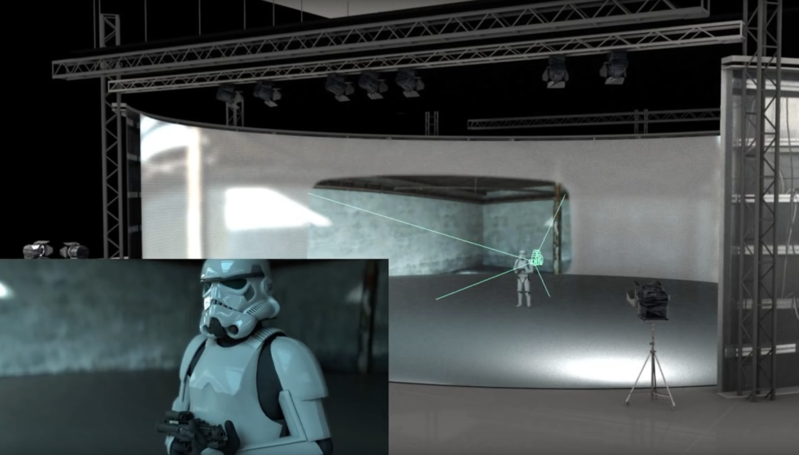

W ostatnich latach efekty specjalne znacznie się polepszyły. Postacie generowane komputerowo mają bardzo realistyczne symulacje skóry bądź futra, a światy stworzone całkowicie od podstaw w komputerze wydają sie prawdziwe. Pojawiła się nowa technologia która rewolucjonizuje filmy mające akcje umieszczoną w innych światach. Mówię o Project Spotlight i to właśnie o nim poświęce tą podstrone.
Świat i jego szczegóły są tworzone za pomocą Unreal Engine, wcześniej używanego do gier komputerowych. Scena składa się z ścian-ekranów LED które wyświetlają niektóre wstępnie renderowane treści i są filmowane w celu zobaczenia efektu końcowego w kamerze. Ponadto istnieje możliwość zmiany perspektywy i otoczenia w zależności od położenia aparatu i zastosowanego obiektywu.
